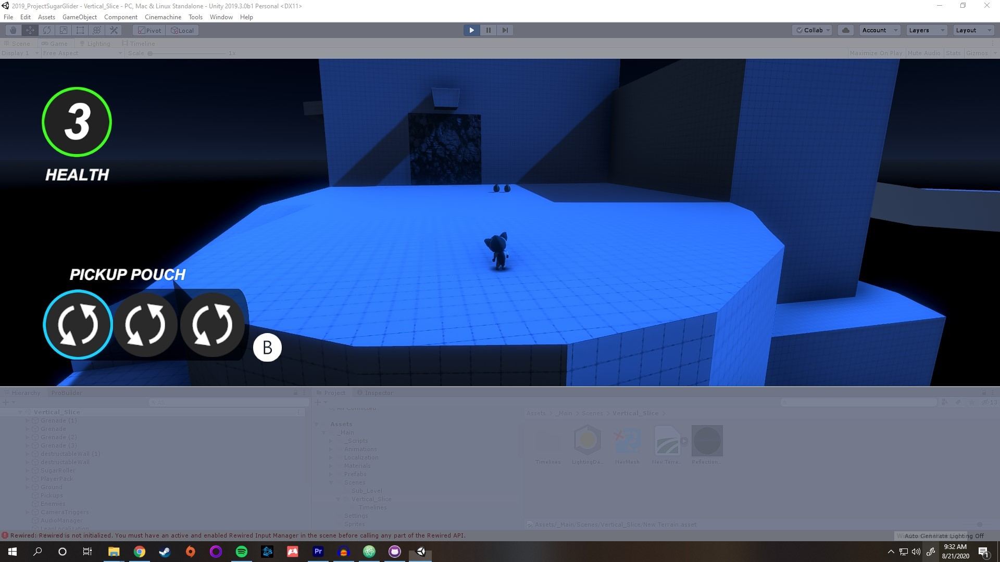
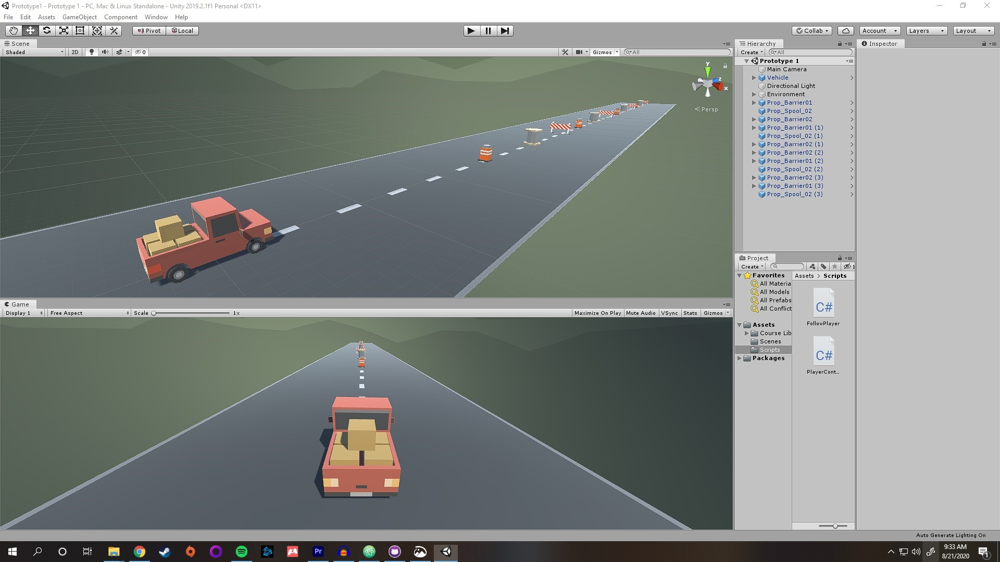
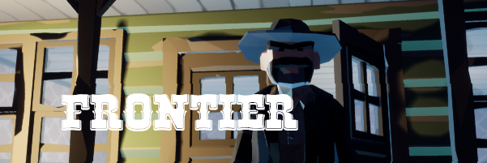
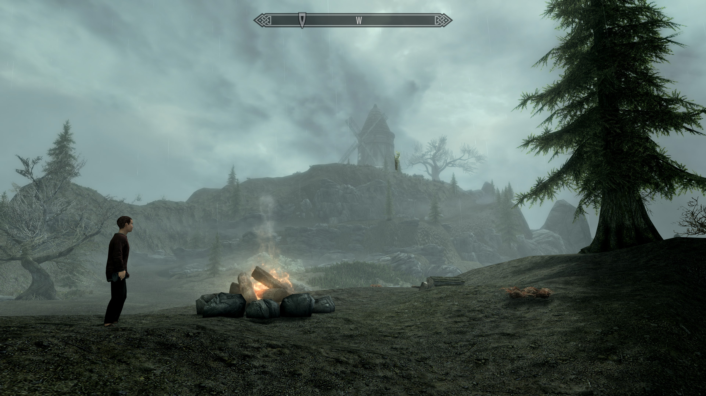
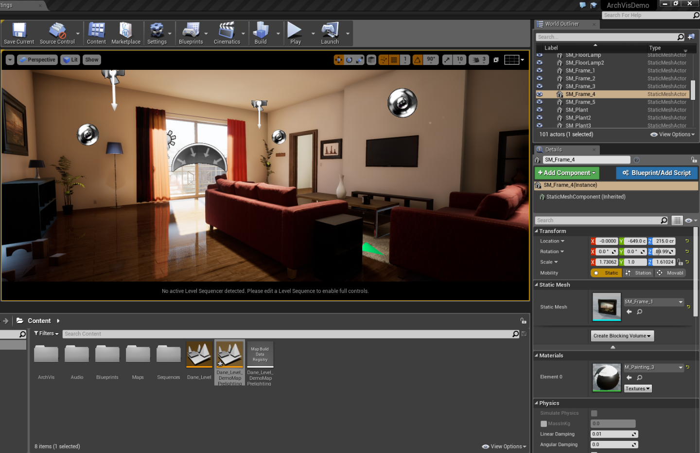

Unity Experience>


Playtest Podcast

Here is my Podcast in which I interview indipendent video game creators. I hold this Podcast close to me and see this as content I would like to display on a portfolio, because I find that it expresses the industry in which I want to get into, and also brings about topics that I bring up day to day. Here I have a link, an image, and also an audio file that you can check out!
Frontier
Frontier is a game that I put together with existing code and art through the Unreal Engine for a Computer Science project. You can check it out on itch.io!
Skyrim Blackmore Ridge Mod
Here is my work in Game Design on a Mod I made for The Elder Scolls V: Skyrim.
Unreal Apartment Project
Here is a project of mine in designing a player space within the Unreal Engine.